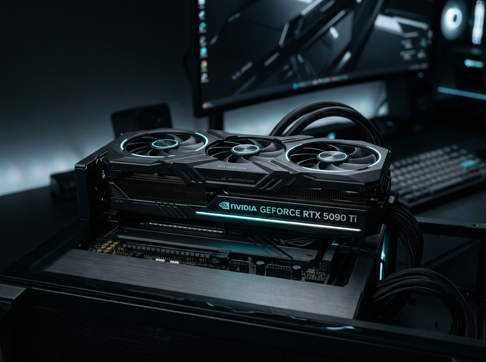

Instant Tech Intelligence, Summarized with Precision
Cut through tech news noise. Aggregate, analyze, and extract structured 3-category sentiment from premier technology publications in seconds with high-concurrency LLM inference.
Article Information
| Website | Tom's Hardware |
|---|---|
| Title | Nvidia GeForce RTX 5090 Review: Blackwell Architecture Breakthrough |
| Author | Jarred Walton |
| Publish Date | Today |
| Keywords | Blackwell, RTX 5090, GDDR7, DLSS, Performance, Benchmarks |
| Article Preview |
Tom's Hardware
Nvidia GeForce RTX 5090 Review: Blackwell Architecture Breakthrough
Nvidia's flagship Blackwell GPU showcases major gen-over-gen performance uplifts with GDDR7 memory and 3rd-generation RT cores. Power consumption is kept in check with refined thermals...  |
Summary
- Blackwell GB202 architecture features 24,576 CUDA cores manufactured on TSMC's custom 4NP process node.
- Equipped with 32 GB of ultra-fast 512-bit GDDR7 VRAM delivering up to 1,792 GB/s memory bandwidth.
- Demonstrates a 35% to 48% rasterization uplift and up to 60% ray tracing performance boost over the RTX 4090.
- Native integration of DLSS 4 multi-frame generation technology with sub-millisecond tensor processing overhead.
- Redesigned dual-flow vapor chamber thermal solution maintains GPU core temperatures under 68°C under full load.
- MSRP positioned at $1,999, targeted strictly at halo enthusiasts, creative pros, and local AI developers.
- Outperforms competing desktop hardware in FP8 matrix computing and generative token generation velocity.
Sentiment Analysis
Positive
- Massive memory bandwidth gains with 512-bit GDDR7 memory interface.
- Substantial ray tracing and rasterization gains over previous generation.
- Quiet acoustics and efficient thermals with redesigned vapor chamber.
Neutral
- Premium $1,999 pricing reflects enthusiast workstation positioning.
- 600W total board power requires a dedicated 12V-2x6 PCIe 5.1 cable.
- Large 3.5-slot footprint necessitates spacious ATX chassis.
Negative
- Extremely constrained launch availability expected across major retailers.
- High power draw demands upgraded 1000W+ power supplies for older rigs.
Minimalist Design, Maximum Analytical Power
Built from the ground up for engineers, researchers, and tech enthusiasts who value concise, signal-dense data without advertising clutter.
Real-Time 4-Stage SSE Streaming
Experience zero-latency feedback. Server-Sent Events stream live progress across 4 precise stages: publication scraping with live per-site progress indicators, DOM & metadata parsing, parallel Groq LLM inference, and formatted summary delivery.
Structured 3-Category Sentiment
Evaluate hardware reception with 3 qualitative categories—Positive highlights, Neutral specifications, and Negative limitations. Grounded takeaways cleanly isolate strengths from drawbacks without arbitrary numbers or hallucinated ratings.
Concise 7-Point Executive Summaries
Strict programmatic limits cap summaries to at most 7 high-impact bullet points. The prompt architecture prioritizes brand mentions, benchmark performance, price, brand comparisons, and matched keywords.
Custom Prompt Directives
Guide the AI to extract exactly what you need. Specify focus areas such as power efficiency, pricing analysis, thermal dissipation, or architectural changes, while maintaining strict summarization bounds.
Supabase PostgreSQL Archive
Persist analyses seamlessly to cloud PostgreSQL. Search historical records by publication, exact URLs, author/title keywords, or date bounds, or instantly fetch the 10 most recent saves or all saved articles in 1 click.
Zero-Trust Prompt Sanitization
Multi-layer security filters intercept prompt jailbreaks, instruction overrides ("DAN mode", "ignore previous"), code/game generation requests, and off-topic queries before LLM execution, ensuring uninterrupted safety.
Offline HTML & Resend Email Export
Generate standalone offline HTML reports (summaries.html) with embedded dark styles and link preview cards via browser Blob downloads, or dispatch rich digests to any verified email via Resend API.
High-Throughput Concurrency & Resilience
Leverages AsyncGroq and Python asyncio.gather() for multi-article parallel execution. Includes automated exponential backoff on HTTP 429 rate limits, payload auto-truncation for HTTP 413, and multi-model fallback.
Under the Hood: High-Concurrency Pipeline
A non-blocking full-stack architecture combining FastAPI, BeautifulSoup DOM scrapers, Groq Cloud inference, and Supabase PostgreSQL.
Web Scraping & Metadata Engine
Executes concurrent article scraping across 8 premier tech publications using BeautifulSoup4. Resolves OpenGraph (og:image, og:description) and Twitter Cards metadata for rich card link previews.
- Tuple Date Comparison: Replaced complex conditional trees with
(year, month, day)tuple range filtering. - Relative Date Parsing: Converts "X hours ago" and "X days ago" relative timestamps to calendar dates.
- Word Limit Filtering: Drops bloated multi-page listicles exceeding word thresholds to preserve token capacity.
AI Inference & 50% Token Optimization
Orchestrated via AsyncGroq running the primary groq/compound-mini model with fallback across groq/compound and openai/gpt-oss-120b.
- Single Combined Prompt: Combines 7-point summary and 3-tier sentiment analysis into one prompt, cutting input tokens by 50%.
- Exponential Retry Backoff: Automatically sleeps 1.2s and 2.4s on Groq HTTP 429 rate limit bursts.
- Payload Truncation Buffer: Handles HTTP 413 request size limits by trimming user text to 3,000 characters and retrying cleanly.
Server-Sent Events & Real-Time UX
Delivers live progress via FastAPI StreamingResponse with text/event-stream. The frontend decodes binary chunks using ReadableStreamDefaultReader and TextDecoder.
- Live Per-Publication Feedback: Shows real-time publication names and 10%–100% stage completions.
- Local State Persistence: Caches active summaries in
localStorage, restoring articles upon browser reload. - Batch Selection Bar: Checkbox controls dynamically update actions (Save X, Email X, Export X, Clear X).
Persistence & Dynamic Migration
Manages cloud persistence with Supabase PostgreSQL. Supports complex multi-criteria queries and automated content migration.
- Upsert Deduplication: Prevents duplicate records using
on_conflict="url"upsert operations. - Dynamic Preview Backfill: Automated engine scans saved records and injects missing OpenGraph preview cards.
- Lifespan Shutdown Flush: Flushes active in-memory session dictionaries to Supabase upon server shutdown.
Direct Scraper Integration
Fine-tuned scraping pipelines custom built for the internet's top hardware, enthusiast, and consumer tech sources.
From Query to Intelligence in 3 Steps
An intuitive UI engineered to minimize interaction fatigue and deliver insights immediately.
Select & Configure
Choose target publications from custom multi-select menus, enter search terms, configure date bounds, and optionally supply custom summary focus prompts.
Stream & Analyze
Watch the glowing progress bar advance in real-time as scrapers pull article DOMs, extract link previews, and Groq generates succinct 7-point summaries and 3-category sentiment analysis.
Batch Save, Email or Export
Select key articles via batch checkboxes, persist to your Supabase archive, dispatch an email digest via Resend API, or download a standalone offline HTML report.
Ready to elevate your tech reading?
Experience real-time AI summarization and 3-category sentiment analysis across the web's leading technology publications.